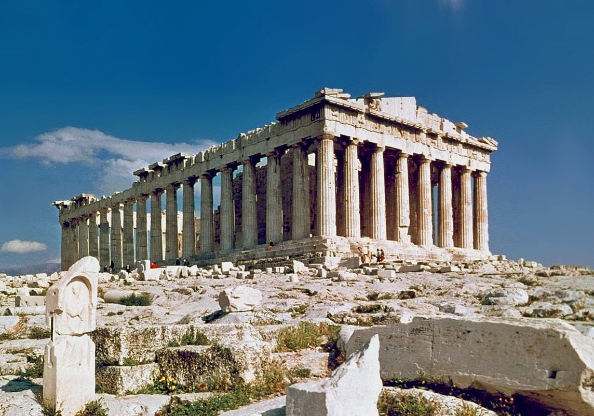
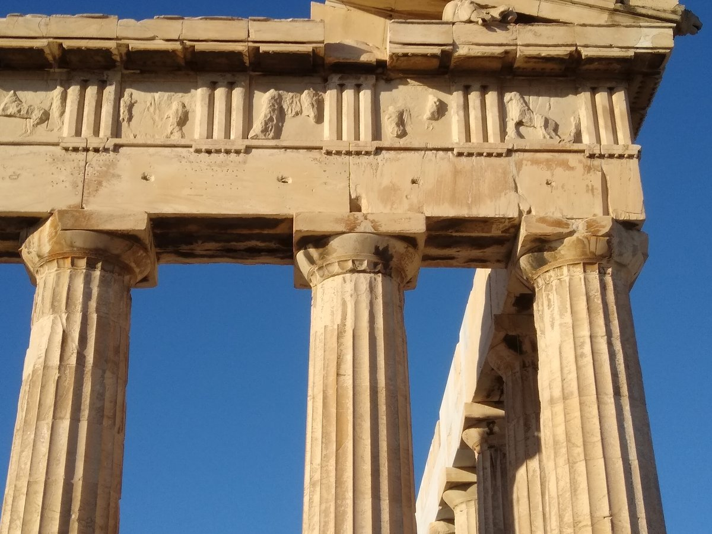

Ictinus and Callicrates, with sculpture by Phidias · 447–432 B.C.E. · Athens
Look closely at the balanced structure
Magnifier

The Parthenon on the Athenian Acropolis, 447–432 B.C.E. About 228 feet long and 101 feet wide. Designed by the architects Ictinus and Callicrates; sculptural program directed by Phidias.
Detail · southeast corner

The southeast corner: fluted Doric columns rising to simple capitals, the plain architrave above, the alternating triglyphs and weathered metopes of the Doric frieze, the overhanging cornice, and the corner of the east pediment.
The Parthenon is the most famous Greek temple. It was built on the Athenian Acropolis between 447 and 432 B.C.E. by the architects Ictinus and Callicrates, with its sculpture directed by Phidias. It replaced an earlier temple destroyed when the Persians sacked Athens, and it became, in Athenian minds, the symbol of their city’s achievement.
The building is a Doric temple: a rectangular inner room ringed by a single row of columns under a low gabled roof. Its proportions, carving, and sculpture became the standard against which every classical building has been measured since. Every classical revival that follows, Roman, Renaissance, and Neoclassical, looks back to this one building.
Words to know
Doric order
The simplest of the three Greek architectural orders. Fluted columns stand directly on the floor with no base, topped by a plain round capital and a square block. Above sits a plain beam, a frieze of alternating triglyphs and metopes, and a projecting cornice.
Pediment
The triangular gable at each short end of a classical temple, often filled with carved relief sculpture. The Parthenon’s east pediment showed the Birth of Athena; its west pediment showed Athena and Poseidon competing to become the city’s patron god.
Classical balance
The careful symmetry and mathematical proportion that govern classical Greek buildings. Every element answers to another: column to column, pediment to pediment, left to right. The Parthenon is the textbook case.
What to notice
The building is almost perfectly symmetrical: 8 columns across each short end, 17 columns down each long side, and a rectangular inner room centered inside the colonnade. Every element answers to its mirror on the opposite side.
The columns are fluted, carved with shallow vertical grooves, and taper gently upward. They stand on a three-step platform called the stylobate.
Above the columns runs the entablature in three bands: the plain architrave, the sculptural frieze of triglyphs alternating with metopes, and the overhanging cornice.
At each short end, a triangular pediment once held carved relief sculpture. The east pediment showed the Birth of Athena; the west showed Athena and Poseidon competing for Athens. The sculpture is mostly in museums now.
In the detail image, the full Doric vocabulary is visible in close-up: fluted column shafts, simple capitals, the plain architrave, alternating triglyphs and weathered metopes, the projecting cornice, and the edge of the east pediment.
Why this matters later
The Parthenon is the single building most quoted in later Western architecture. In the Early Medieval deck, you will meet Old St. Peter’s and Santa Sabina, Christian basilicas that reuse its column-and-entablature system. In the Renaissance deck, you will meet Brunelleschi’s Ospedale degli Innocenti, Bramante’s Tempietto, and Palladio’s Villa Rotonda, which return to its proportions. Every columned portico on a bank, courthouse, museum, or church in the Western world traces back to this building.
Image credits. The Parthenon, Athens, and its southeast corner, photographs via the linked source card’s Wikimedia Commons credits.